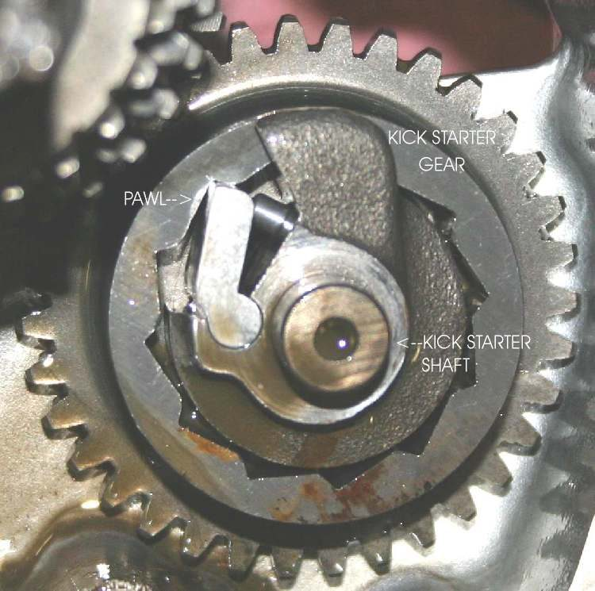
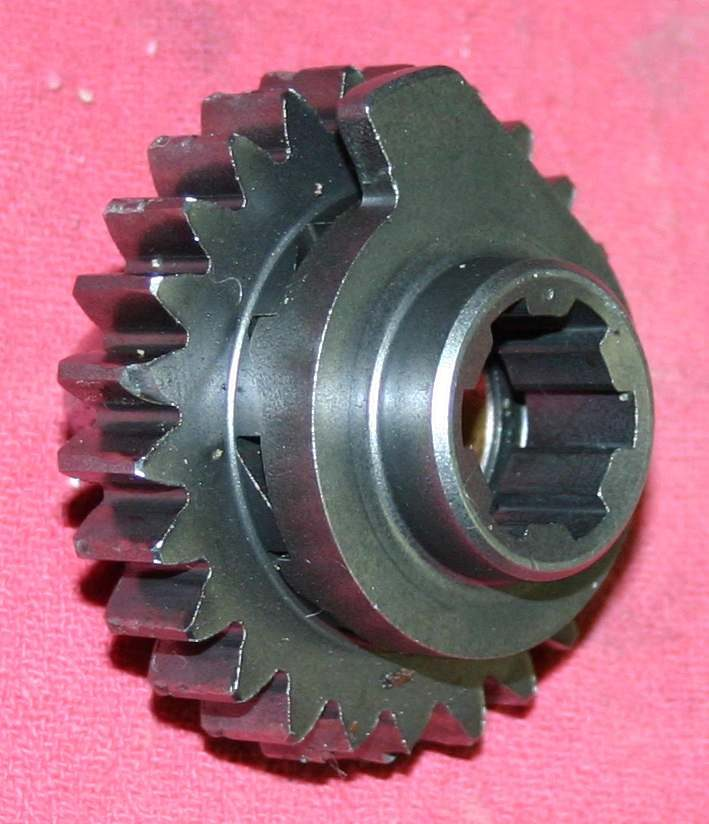
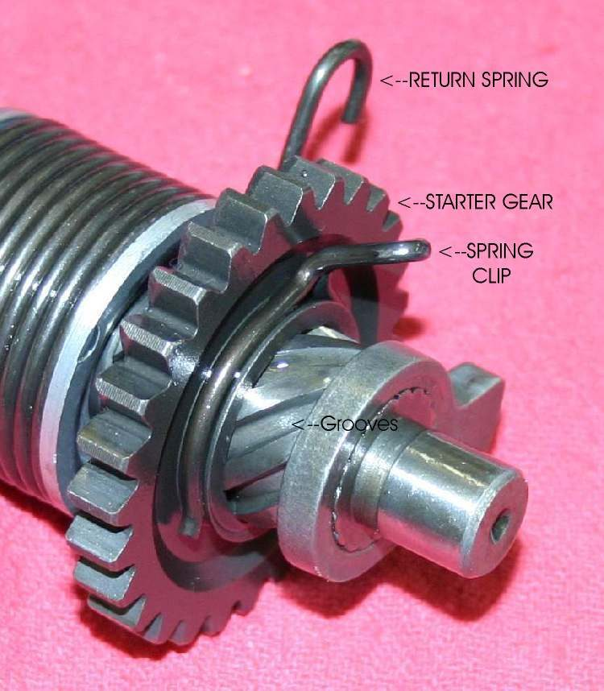
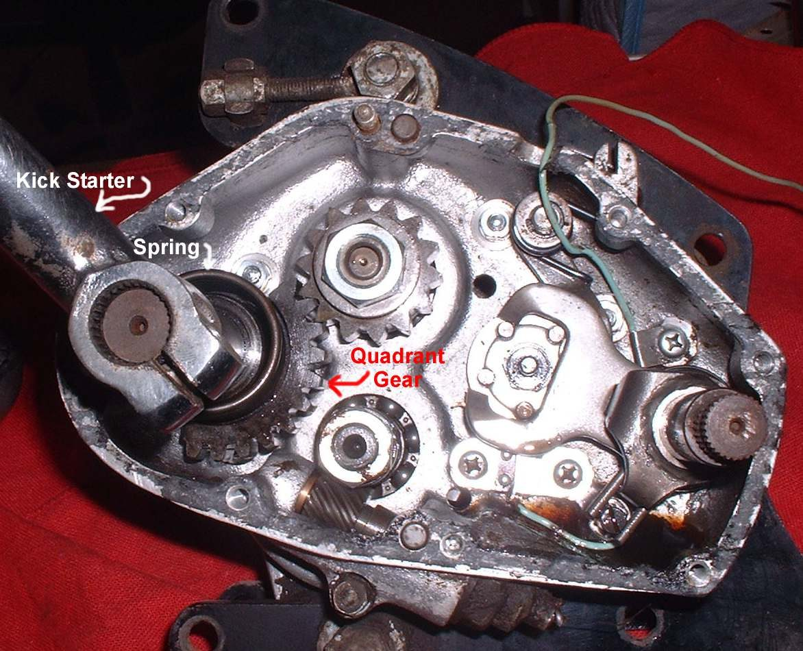

You push the kick pedal and it goes down easily, without turning the engine, or it turns the engine only part of the way. Either the pedal is slipping on its shaft, the ratchet inside the engine is not gripping, or the clutch is slipping. On many commuter bikes the kickstarter turns the engine through the gearbox and clutch, so a slipping clutch also makes the kick slip.
Is it safe to ride?
Yes, if the bike starts with the electric starter. If the clutch slips while riding too, see Clutch slips: revs rise but the bike does not pull.
Quick checks first
- Is the pedal pinch bolt tight? Does the pedal move on the shaft?
- Is the bike in neutral?
- Is there free play at the clutch lever?
- Is the engine oil at the correct level and the right type (car oil can make wet clutches slip)?
Diagnose it step by step
1Hold the shaft end and move the pedal. Does the pedal move on the shaft?
- Yes: the splines are worn or the bolt is loose. Tighten the bolt; if the splines are rounded, replace the pedal (and the shaft if its splines are worn). Check the kickstart mechanism.
- No: go to step 2.
2Does the clutch lever have free play, and does the bike pull normally in gear without the revs racing?
- No free play, or the clutch slips when riding: adjust it with Adjust clutch lever free play. If it still slips, the plates are worn: Inspect and replace clutch plates and springs.
- Yes: go to step 3.
3Is the oil level correct and the oil a motorcycle grade for wet clutches?
- No: correct it. Check the engine oil level.
- Yes: go to step 4.
4Does the pedal slip at the same point on every kick, often with a click or clunk?
- Yes: the ratchet or its gear is worn, or the ratchet spring is weak. This is inside the right cover. Check the kickstart mechanism.
- No, it slips randomly: still the ratchet or clutch. Hand to a workshop with the same page.
What happens if you keep kicking: a slipping ratchet can catch suddenly and throw your foot, and worn teeth chip and drop metal into the oil.
Causes, most likely first
| Cause | How to confirm | Fix |
|---|---|---|
| Loose pedal or worn splines | Pedal moves on shaft | Check the kickstart mechanism |
| Clutch slipping (no lever free play) | Lever has no play; revs rise without speed when riding | Adjust clutch lever free play |
| Wrong oil or low oil | Oil type or level check | Check the engine oil level |
| Worn clutch plates | Slips after adjustment | Inspect and replace clutch plates and springs |
| Worn ratchet or weak ratchet spring | Slips at the same point; cover off | Check the kickstart mechanism |